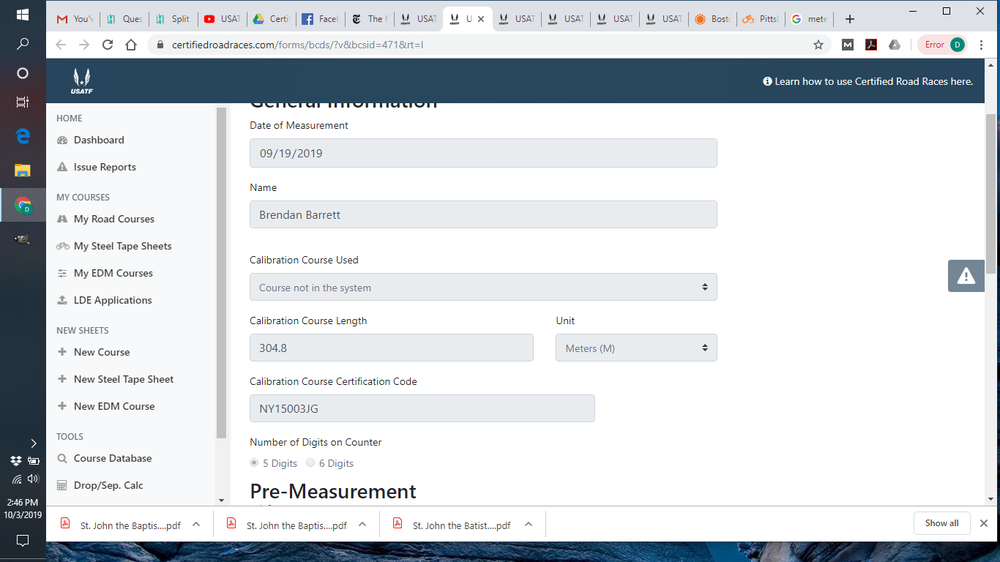
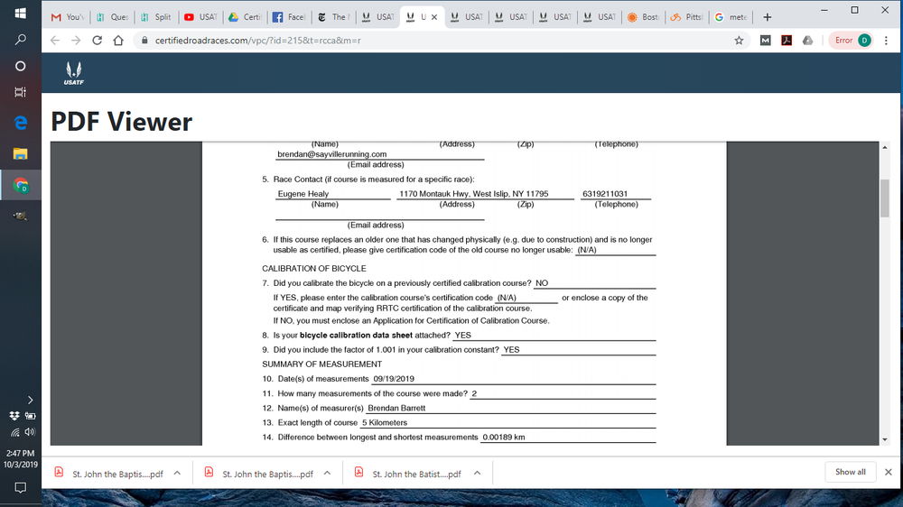

Read-Only Historical Archive — Posting and registration are permanently closed.
Q: A user asks: "What's the procedure if you are using a pre-existing cal course? Wondering how that gets entered into My Steel Taped courses."
A: The "New Steel Tape Sheet" selection in the New Sheets section of the menu is only for applying to certify a new cal course.
After creating a new a road course in the system, if you are using a pre-existing certified cal course, there is a field on the Bicycle Calibration Data Sheet for both the pre-calibration and the post-calibration forms where the Cert ID of the existing cal course is entered. You will also need to specify the length of the calibration course and the measurement unit. See the example below.
"
Jim
There is no "Calibration Course Certification Code" field for a pre-existing certified cal course.
As a work-around until this issue is resolved, how about uploading the pre-existing certified cal course as a supporting document from the application screen?
Oops. This feature hadn't make it over from our dev site. It's there now.!!
No workaround needed.
I just received an email from a measurer in Louisiana with all his documents for review and certification. I will be sending him a reply asking why he didn't use the new system. But I decided to get a head start and review his submission. He reported using an existing cal course, LA18007DR. When I searched the database for the documents, the course was not found. Are we having issues with the course search function?
I now understand why the system could not find the cal course. The system default for course type is road course. In the old system, if you knew the certificate number and entered it in the search field, you did not need to specify course type. Once I changed the type to cal course, the forms were shown. I'm sure there is a good reason why the search engine assumes it is a road course, but it is not obvious to me.
The cal course is there. The default search criteria are set to Course Status = Active and Course Type = Road as those are the most frequently searched courses. As you discovered you need only change the Course Type filter to Calibration.
When I search the database, I can retrieve certified course maps but not the actual certificate as with the old system. Is this intentional or something the new system hasn't caught up with yet?
What was certified course ID were you searching for?
I think problem solved. I wasn't getting the actual certificates on my iPad, but now, when I search on my desktop they're there.
I'm still not clear on the distinction between the fields for "calibration course used" and "calibration course certification code." The learning site isn't helping me on this, either. Anyway, I've looked at several course apps that show these conflicting pieces of information. Here are screen shots from the latest to show what I'm seeing:

Thanks, Diana. Will take a closer look at this next week with the developer. What I can say is that the "calibration course used" field is intended to allow the user to select a cal course that they themselves measured for certification.
The "calibration course certification code" field is where the user enters the Cert ID of the cal course, if it was not one that the user certified.
The PDF snip you show may attributable to the user error. I'd have to see the "raw form" data as well in order to determine whether it is a system issue or not.
I'm not sure if this helps, but the cal course in this case is NOT one that the measurer did.